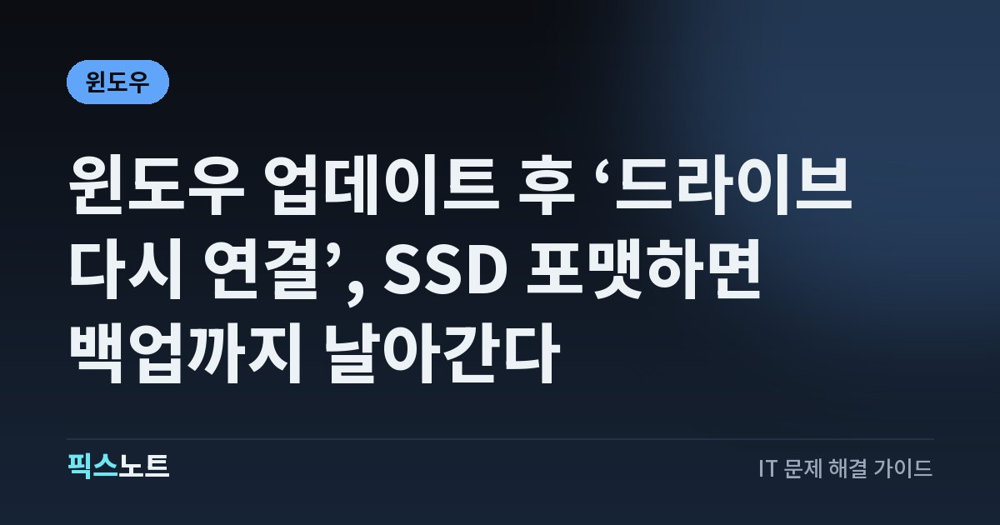

윈도우 업데이트 후 ‘드라이브 다시 연결’, SSD 포맷하면 백업까지 날아간다
9월 윈도우 업데이트 뒤 파일 히스토리가 ‘드라이브 다시 연결’을 띄울 때 포맷 없이 고치는 순서.

외장 SSD를 멀쩡히 꽂아 뒀는데 파일 히스토리가 자꾸 ‘드라이브 다시 연결’을 띄운다면, 드라이브 고장을 의심하기 전에 날짜부터 보세요. 9월 8일 윈도우 11 보안 업데이트(KB5124008) 뒤에 생긴 증상이라면 Microsoft가 공식으로 인정한 버그일 가능성이 커요. 여기서 드라이브를 포맷하면 멀쩡한 백업까지 사라져요. 포맷 없이 고치는 순서를 정리했어요.
결론부터: 9월 업데이트 뒤라면 드라이브보다 업데이트 문제예요
Microsoft는 2026년 9월 8일 윈도우 11 보안 업데이트(KB5124008)를 설치한 뒤 파일 히스토리가 멈출 수 있다는 알려진 문제를 9월 19일 공식 문서에 올렸어요. 호환되는 백업 드라이브가 제대로 연결돼 있어도 ‘드라이브 다시 연결’ 메시지가 잘못 뜰 수 있고, 외장 드라이브나 네트워크 위치로 백업하거나 복원하지 못할 수 있어요.
그리고 9월 22일에 나온 업데이트 KB5124010에서 이 문제가 수정됐어요. 증상이 9월 업데이트 직후 시작됐다면 할 일은 하나예요. 드라이브는 그대로 두고 윈도우 업데이트부터 하는 거예요.
1분 만에 가르기: 내 증상이 이 버그일까?
먼저 이 버그에 해당하는지부터 가려야 엉뚱한 곳을 건드리지 않아요.
- 설정 > Windows 업데이트 > 업데이트 기록에서 KB5124008이 언제 설치됐는지 봐요.
- 파일 탐색기에서 백업 드라이브가 정상적으로 열리는지 확인해요.
- 드라이브 안의 파일을 열거나 다른 파일을 복사할 수 있는지 봐요.
- 증상이 업데이트 직후 시작됐고 드라이브가 잘 열린다면 이번 알려진 문제일 가능성이 커요.
반대로 파일 탐색기에서도 드라이브가 안 보이거나 다른 PC에서도 안 읽힌다면 케이블, 전원, 드라이브 자체 문제예요. 이 경우는 마지막 섹션의 점검 순서를 따라가세요.
해결: KB5124010 이후 업데이트 설치
수정은 9월 22일 업데이트 KB5124010에 들어 있어요. 이 업데이트는 보안 업데이트가 아닌 선택적 업데이트라, 자동으로 깔리지 않고 직접 설치해야 할 수 있어요.
- 설정 > Windows 업데이트를 열고 ‘업데이트 확인’을 눌러요.
- KB5124010 또는 그보다 새 누적 업데이트가 보이면 ‘다운로드 및 설치’를 눌러요.
- 설치가 끝나면 재부팅해요.
- 제어판 > 시스템 및 보안 > 파일 히스토리에서 드라이브가 다시 잡히는지 봐요.
선택적 업데이트가 안 보인다면 다음 정기 누적 업데이트를 기다려도 돼요. 윈도우 누적 업데이트는 이전 수정 사항을 함께 담아서 나오기 때문이에요.
고친 뒤엔 작은 백업으로 먼저 확인
업데이트하고 재부팅했다면 바로 전체 백업을 새로 만들지 말고, 파일 히스토리가 정상으로 돌아왔는지부터 작게 확인하세요.
- 제어판 > 시스템 및 보안 > 파일 히스토리에서 기존 드라이브가 인식되는지 봐요.
- ‘지금 실행’을 눌러 바뀐 파일 몇 개가 실제로 백업되는지 확인해요.
- 마지막으로 백업된 시간이 지금 시각에 가깝게 바뀌었는지 봐요.
- 중요한 파일 하나를 골라 속성의 ‘이전 버전’에서 복원이 되는지도 시험해요.
이렇게 작은 범위로 확인하면 포맷이나 백업 세트 삭제 없이도 수정이 먹혔는지 알 수 있어요.
주의: 이것만은 하지 마세요
파일 히스토리에 오류가 떠도 드라이브에 들어 있는 백업이 망가졌다는 뜻은 아니에요. 그런데 급한 마음에 아래 작업을 하면 그때부터 진짜로 백업이 사라져요.
- 백업 드라이브 포맷(디스크 관리에서 볼륨 삭제 포함)
- 드라이브 안의 FileHistory 폴더 수동 삭제
- 복원할 이전 버전이 안 보인다고 원본 파일 정리
- 레지스트리 청소 프로그램 실행
중요한 문서는 파일 히스토리 하나만 믿지 말고 다른 저장장치나 클라우드에도 사본을 하나 더 두세요.
윈도우 버전부터 확인: 24H2는 곧 지원 종료
KB5124008은 윈도우 11 24H2와 25H2용 업데이트예요. 두 버전은 같은 업데이트를 받지만 OS 빌드 번호가 달라서, 24H2는 26100으로, 25H2는 26200으로 시작해요. 시작 버튼을 오른쪽 클릭하고 실행을 눌러 winver를 입력하면 버전과 빌드가 바로 나와요.
24H2라면 하나 더 챙길 게 있어요. Microsoft 수명 주기 표 기준으로 24H2 Home·Pro 지원은 2026년 10월 14일에 끝나요. 그 뒤로는 보안 업데이트가 끊기니, 파일 히스토리를 고친 김에 25H2 이후 버전으로 올릴 계획을 세워 두세요.
업데이트가 안 보이거나 설치가 막힐 때
윈도우 업데이트에 KB5124010이나 더 새 업데이트가 보이지 않는다면 드라이브를 건드리기 전에 업데이트 쪽을 먼저 풀어야 해요.
- 설정 > Windows 업데이트에서 업데이트 일시 중지가 켜져 있는지 봐요.
- 재시작을 기다리는 업데이트가 있으면 먼저 재부팅해요.
- ‘사용 가능한 즉시 최신 업데이트 받기’ 옵션을 켜면 보안 외 업데이트를 더 빨리 받을 수 있어요.
- 그래도 없으면 다음 정기 업데이트까지 기다리되, 그동안 중요한 파일은 직접 복사해 둬요.
최신 업데이트 뒤에도 안 되면: 드라이브와 설정 점검
수정이 들어간 업데이트를 설치하고 재부팅했는데도 계속 실패한다면, 그때부터는 윈도우 문제와 드라이브 문제를 나눠서 봐야 해요.
- 파일 히스토리 화면에 뜨는 오류 문구를 그대로 적어 둬요.
- 다른 USB 포트에 꽂거나 허브를 빼고 직접 연결해 봐요.
- 다른 PC에서 드라이브가 읽히고 파일 복사가 되는지 봐요. 이때도 포맷은 하지 마세요.
- 회사나 학교 PC라면 정책으로 파일 히스토리가 막혀 있는지 관리자에게 물어봐요.
- 중요한 자료를 다른 곳에 복사한 뒤, 윈도우 버전과 OS 빌드, 설치된 KB 번호, 오류 문구를 정리해 Microsoft 지원에 문의해요.
자주 묻는 질문
KB5124008을 지우면 파일 히스토리가 다시 되나요?
보안 업데이트를 지우면 그 업데이트로 막은 보안 문제가 다시 열려요. 이미 수정이 들어간 KB5124010 이후 업데이트가 나와 있으니, 지우는 것보다 최신 업데이트를 설치하는 쪽이 안전하고 빨라요.
외장 SSD가 고장 난 건지 어떻게 알 수 있나요?
파일 탐색기에서 드라이브가 열리고 파일 복사가 되면 드라이브 자체는 정상일 가능성이 커요. 다른 PC에서도 안 보이거나 연결할 때마다 끊긴다면 그때 케이블, 전원, 드라이브 고장을 의심하세요.
업데이트한 뒤 예전 백업 파일도 다시 볼 수 있나요?
Microsoft 설명은 파일 히스토리가 백업과 복원을 못 하던 문제를 고쳤다는 내용이에요. 드라이브를 포맷하거나 백업 폴더를 지우지 않았다면 수정 뒤 기존 백업에서 복원을 다시 시도할 수 있어요. 먼저 파일 하나로 시험해 보세요.
회사 PC인데 업데이트가 안 보여요.
회사나 학교 PC는 관리자가 업데이트 배포 시점을 정하는 경우가 많아요. 설치 파일을 따로 구해 깔기보다 IT 담당자에게 KB5124010 이후 업데이트 배포 일정을 물어보는 게 맞아요.